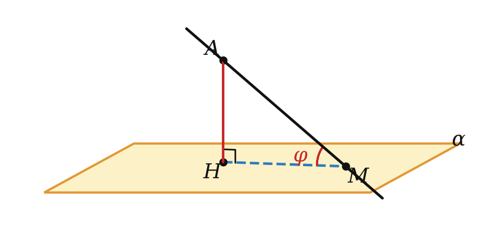
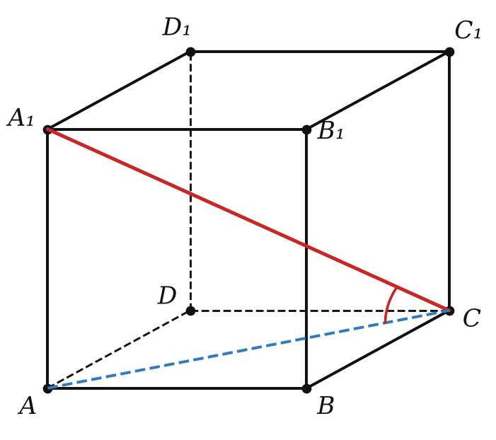

Теория
Проекция на плоскость
Проекция точки на плоскость — основание перпендикуляра, проведённого из точки к плоскости (если точка лежит в плоскости, она сама себе проекция). Проекция фигуры — множество проекций всех её точек. Проекция прямой, не перпендикулярной к плоскости, — прямая (в учебнике это доказано); проекция прямой, перпендикулярной к плоскости, — точка.
Проекцию удобно представлять как тень, когда свет падает строго отвесно, перпендикулярно земле. Тень наклонной палки на земле — её проекция. Если палку поставить вертикально, её тень превратится в точку.
Угол между прямой и плоскостью
Углом между прямой и плоскостью, пересекающей эту прямую и не перпендикулярной к ней, называется угол между прямой и её проекцией на плоскость.
Если прямая перпендикулярна к плоскости, угол считают равным 90°; если прямая параллельна плоскости или лежит в ней — 0°.

Для наклонной AM с перпендикуляром AH угол φ = ∠AMH находится из прямоугольного треугольника AHM:
| формула | |
|---|---|
| sin φ | AH / AM — перпендикуляр к наклонной |
| cos φ | HM / AM — проекция к наклонной |
| tg φ | AH / HM — перпендикуляр к проекции |
Угол между наклонной и плоскостью — наименьший из всех углов, которые наклонная образует с прямыми, проведёнными в этой плоскости через основание наклонной.
Угол между двумя прямыми не бывает тупым, поэтому и угол между прямой и плоскостью всегда от 0° до 90°. Свойство же объясняет, почему в определении берут именно проекцию: с ней наклонная образует самый маленький угол из возможных, и этот угол показывает, насколько круто прямая «входит» в плоскость.
Угол между прямой и плоскостью ищут между прямой и её проекцией, а не между прямой и «какой-нибудь» прямой плоскости. Сначала строим перпендикуляр из точки прямой к плоскости, потом соединяем его основание с точкой пересечения прямой и плоскости — это проекция.
Разбор примеров
Из точки, удалённой от плоскости на 6, проведена наклонная под углом 30° к плоскости. Найдите длину наклонной и её проекции.
sin 30° = 6 / l ⟹ l = 12. Проекция = √(144 − 36) = 6√3 (или 12 · cos 30°).

Ребро куба ABCDA₁B₁C₁D₁ равно a. Найдите тангенс угла между диагональю A₁C и плоскостью основания, а также угол между диагональю грани A₁B и плоскостью основания.
A₁A ⊥ (ABC), значит, A — проекция точки A₁, а AC — проекция A₁C, искомый угол — ∠A₁CA. tg = a / (a√2) = √2/2.
Для A₁B проекция — AB, треугольник A₁AB прямоугольный равнобедренный: угол 45°.
Отрезок AB длиной 10 пересекает плоскость; его концы удалены от плоскости на 3 и 5. Найдите длину проекции отрезка и синус угла между AB и плоскостью.
Проведём перпендикуляры AA′ = 3 и BB′ = 5 к плоскости. Проекция отрезка — A′B′. Прямые AA′ и BB′ параллельны (обе перпендикулярны к плоскости), поэтому точки A, A′, B, B′ лежат в одной плоскости.
В этой плоскости проведём через A прямую, параллельную A′B′; она пересечёт прямую BB′ в точке K. AA′B′K — прямоугольник, поэтому AK = A′B′ и B′K = 3. Концы отрезка по разные стороны от плоскости, значит, BK = 5 + 3 = 8.
Треугольник ABK прямоугольный (угол K прямой): гипотенуза 10, катет 8. Проекция A′B′ = AK = √(100 − 64) = 6. Угол между AB и плоскостью равен углу BAK (AK ∥ проекции), sin φ = 8/10 = 0,8.
Задачи урока
Реши в тетради, к каждой задаче — чертёж. Разберём на занятии.
Тест к уроку
Домашнее задание
Задачи Д1–Д6 ниже. На каждом чертеже отметить перпендикуляр, проекцию и искомый угол. Выучить определение и свойство наименьшего угла.